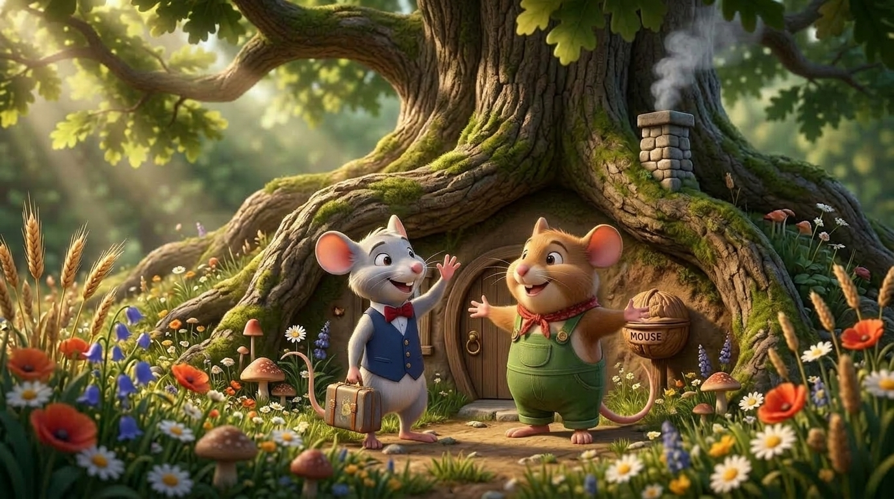
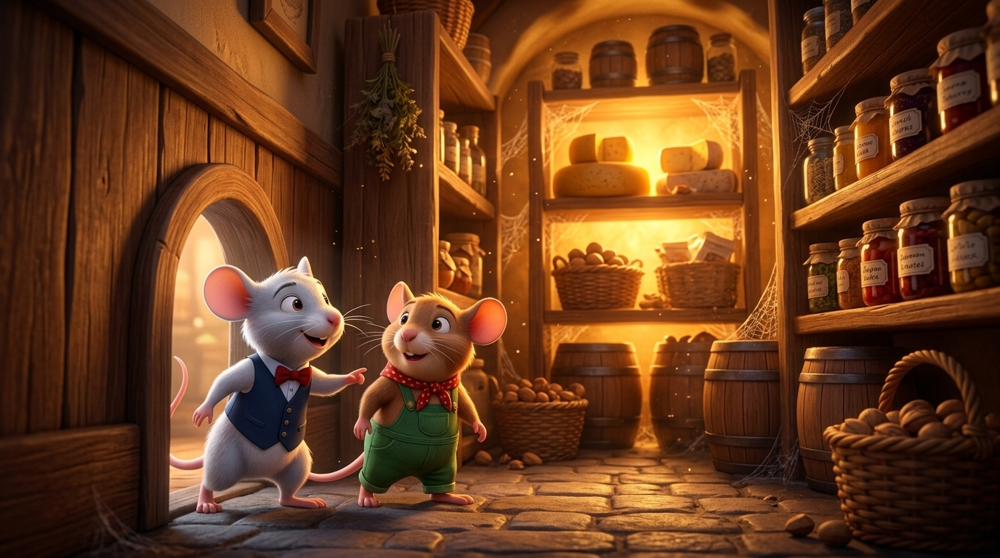
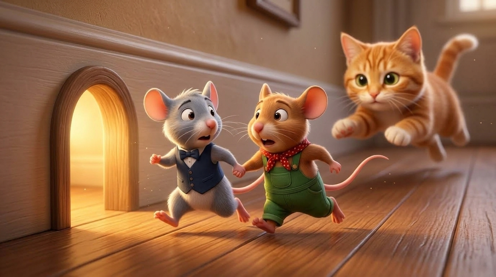
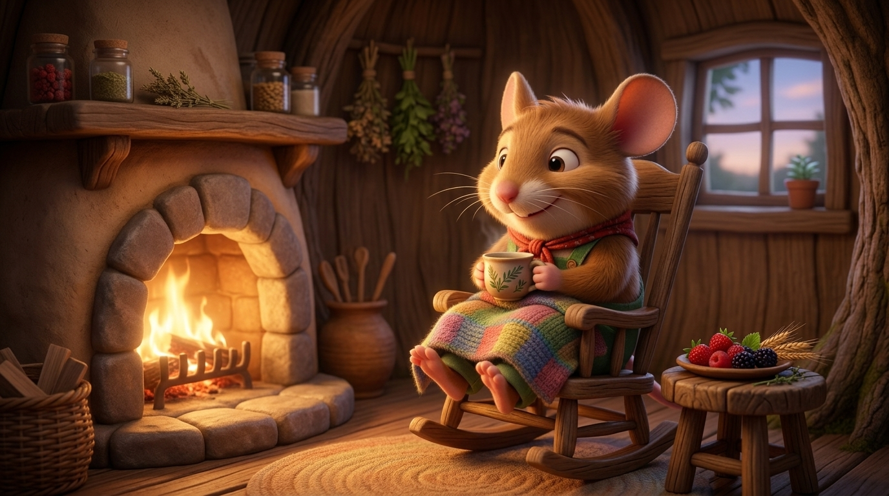

🐭 The City Mouse & The Country Mouse
A1 / A1+ ENGLISH WORKSHEETName:
Date:
Score:
Part 1: Word Bank — Write the Correct Word under each Picture
[ City Mouse ]
[ Country Mouse ]
[ Delicious Food ]
[ The Cat ]


Part 2: Story Sequence — Write numbers (1, 2, 3, 4, 5, 6) in the circles
Put the story pictures in order from 1 (First) to 6 (Finally):

Country Mouse lives in the country.

City Mouse visits his country friend.

They go to the city and find a cellar.
They find a big table of delicious food!

A cat comes! The mice run away fast!

Country Mouse is safe at home.